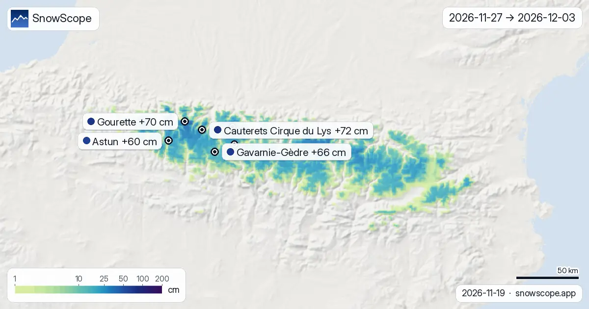

Pyrénées : perspectives à deux semaines, 91 cm début décembre, davantage la semaine 2
Les Pyrénées connaîtront l'arrivée de la neige en deux phases distinctes au cours des deux prochaines semaines, environ la moitié de toute la nouvelle neige tombant d'ici la fin de la semaine 1. Les pentes les plus hautes, au-dessus de 2500 m, accumuleront en moyenne autour de 44 cm, tandis que le terrain de mi-montagne entre 2000 et 2500 m collectera environ 32 cm et les altitudes plus basses resteront minces.
Consultez les prévisions neige en temps réel pour Cauterets Cirque du Lys sur l'application SnowScopeHauteurs de neige, alertes poudreuse et carte 3D, gratuitement.
Deux périodes : première semaine active, deuxième semaine régulière
La première semaine (20–26 novembre) sera la période la plus chargée. Cauterets Cirque du Lys devrait recevoir 44 cm sur cette période, avec les jours de pointe les 25–26 novembre quand 12 cm tombent. Gavarnie-Gèdre verra 50 cm la semaine 1, atteignant son pic de 15 cm le 21 novembre. Ce sont les stations qui bénéficient le plus du premier système perturbé.
La semaine 2 (27 novembre–3 décembre) apporte une neige plus régulière mais moins intense. Cauterets gagnera 29 cm sur ces sept jours, tandis que Gourette en récupère 35 cm. Le rythme change vers des quantités quotidiennes plus petites, mais elles s'accumulent. Le dernier jour notable est le 3 décembre, quand Gourette et les autres stations d'altitude verront autour de 12 cm.
| Station | Hauteur de neige | Neige fraîche, 72 h | Attendu, jours suivants | Sommet |
|---|---|---|---|---|
| Cauterets Cirque du Lys | 9 cm | 8 cm | 22 cm | 2 420 m |
| Gourette | 9 cm | 8 cm | 20 cm | 2 453 m |
| Gavarnie-Gèdre | 3 cm | 4 cm | 10 cm | 2 283 m |
| Piau-Engaly | 15 cm | 13 cm | 17 cm | 2 527 m |
| Astun | 3 cm | 6 cm | 15 cm | 2 272 m |
| Grand Tourmalet | 6 cm | 7 cm | 14 cm | 2 464 m |

L'altitude est déterminante en début de saison
C'est là que l'accumulation fiable se produit et où le ski en début de saison devient viable. La bande de mi-montagne (2000–2500 m) verra généralement 32 cm, bien que certaines prévisions atteignent 51 cm.
Sous 2000 m, la neige est rare et risquée. Entre 1000 et 1500 m, seul 1 cm de médiane est attendu, avec une grande incertitude entre les prévisions. La neige de début de saison en basse altitude fond rapidement ou expose la roche. Privilégiez les pentes supérieures si vous voulez un manteau continu.

Où les prévisions s'accordent et où elles divergent
Cependant, leurs prévisions détaillées diffèrent sensiblement. À Gourette, l'une des prévisions montre aussi peu que 27 cm au total, tandis que l'autre en voit 112 cm—un large écart qui reflète la difficulté de prévoir deux semaines à l'avance.
Les signaux les plus fiables apparaissent autour des 24–26 novembre la première semaine et 1–3 décembre la semaine 2, quand les deux prévisions montrent moins de désaccord. Ces fenêtres sont vos meilleurs paris pour un timing confiant.

Suivi de la couverture neigeuse dans la chaîne
Il y a trois jours (17 novembre), seuls 560 km² des Pyrénées avaient de la neige. Le 22 novembre, cette surface passera à 1710 km². Le 3 décembre, la couverture neigeuse s'étendra à 3160 km². Cette croissance rapide montre comment les systèmes entrants transformeront le paysage.
Le seuil clé est 50 cm de profondeur : début décembre, 1253 km² de terrain contiendront au moins cette profondeur—suffisant pour un ski régulier et pour contribuer l'eau aux écoulements hivernaux. C'est 2 % de la chaîne totale de 70044 km², donc la couverture reste fine en début de saison. C'est au-dessus de 2500 m que se situera la majeure partie de cette profondeur fiable.
À quoi s'attendre dans les stations individuelles
Gavarnie-Gèdre mène la semaine 1 avec 50 cm de total prévus, culminant le 21 novembre avec 15 cm. Cauterets Cirque du Lys reçoit 44 cm la semaine 1 avec son pic de 12 cm les 25–26 novembre. Piau-Engaly accumulera 42 cm la semaine 1 et culminera aussi le 25 novembre avec 13 cm.
La semaine 2, Gourette se distingue avec 35 cm prévus, identique à Cauterets. Les deux verront le 3 décembre comme leur jour le plus chargé. Astun et Grand Tourmalet suivent avec des totaux similaires, tous deux répartissant leur neige de 14 jours à peu près régulièrement entre les deux semaines.
Risques et timing pour les skieurs
La neige de début de saison est mince partout jusqu'à l'arrivée de ces systèmes. Même en altitude, la roche peut être près sous une couche fraîche de 10–15 cm. Après chaque jour de pic de chutes, laissez 24–48 heures pour le tassement avant de vous aventurer sur les pentes raides.
Les pics des 25–26 novembre et 3 décembre valent la peine d'être planifiés : ce sont les deux meilleures fenêtres pour du ski frais. Utilisez SnowScope pour zoomer sur les pentes supérieures de votre station choisie et suivez la prévision au fil de la semaine—les prévisions peuvent changer à l'approche de l'événement.
Conseils aux skieurs
- Skiez le terrain au-dessus de 2000 m à partir de maintenant jusqu'à début décembre. Les pentes supérieures à 2500 m et plus offriront le meilleur rapport neige-roche et la couverture la plus stable pour le début de saison.
- Marquez les 25–26 novembre et 3 décembre comme vos jours privilégiés. Prévoyez de skier le terrain 24–48 heures après chaque pic, une fois que la neige fraîche s'est tassée.
- Avant de partir hors-piste, consultez le bulletin officiel d'avalanche des Pyrénées. La neige fraîche sur les pentes raides augmente l'instabilité, en particulier là où le manteau existant est mince.
- Attendez-vous à la fonte ou au regel sur les pentes en dessous de 1500 m. Si la neige nouvelle tombe sur une nuit froide, le verglas peut se former dessous ; si les températures stagnent près de zéro, la fonte de surface et le regel créent une croûte.
- Utilisez l'application SnowScope pour suivre les changements quotidiens en altitudes supérieures de votre station au cours des 14 prochains jours.
À propos de ces chiffres
Les hauteurs de neige des stations sont la neige la plus épaisse sur le haut du domaine à la date indiquée ; ce sont des estimations pour une zone, pas une mesure en un point. Les prévisions peuvent changer. Consultez toujours le bulletin d'avalanche officiel avant le hors-piste.
Bulletins d'avalanche officiels: Météo-France / Meteocat / AEMET
Citer ce bulletin
Pour la recherche, l'enseignement ou la presse : chiffres et graphiques réutilisables librement sous CC BY 4.0 avec cette citation.
SnowScope (2026), Pyrénées : perspectives à deux semaines, 91 cm début décembre, davantage la semaine 2, https://snowscope.app/blog/fr/2026/11/pyrenees-2-week-snow-forecast-maps-19-november-2026.html, consulté le 2026-11-19
SnowScope (Atlas Labs). (2026, November 19). Pyrénées : perspectives à deux semaines, 91 cm début décembre, davantage la semaine 2. SnowScope snow reports. https://snowscope.app/blog/fr/2026/11/pyrenees-2-week-snow-forecast-maps-19-november-2026.html
BibTeX
@misc{snowscope2026pyrenees2weeksnowforecas,
author = {{SnowScope (Atlas Labs)}},
title = {Pyrénées : perspectives à deux semaines, 91 cm début décembre, davantage la semaine 2},
year = {2026},
month = nov,
howpublished = {\url{https://snowscope.app/blog/fr/2026/11/pyrenees-2-week-snow-forecast-maps-19-november-2026.html}},
note = {Published 2026-11-19 12:26 UTC; accessed 2026-11-19}
}· CC BY 4.0 · Méthodes, données et outils →
Suivre Cauterets Cirque du Lys
Gratuit : un message quand la neige arrive, et la météo chaque matin.
Autres bulletins neige

Cauterets Cirque du Lys domine les Pyrénées avec 24 cm au sommet le 22 novembre. Les chutes de neige prévues le 25 novembre pousseront la couverture de 44 à 51 stations.

Pour une semaine de ski en famille à petit budget à Astún-Candanchú en décembre, visez la fin du mois, quand les pistes supérieures ont une bonne neige dans 67 % des hivers passés.

Un mélange de pluie et neige est attendu sur les Pyrénées au cours des trois prochains jours, l'isotherme 0 °C dépassant les sommets des stations dès dimanche. Entre 13 et 24 cm de neige nouvelle prévue en altitude.